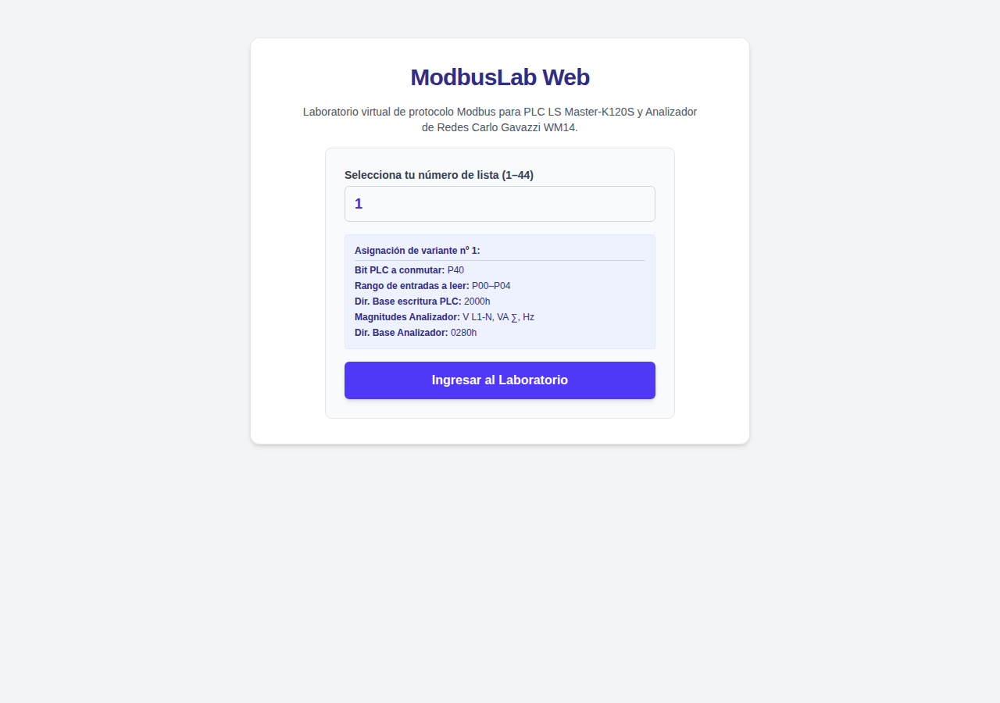
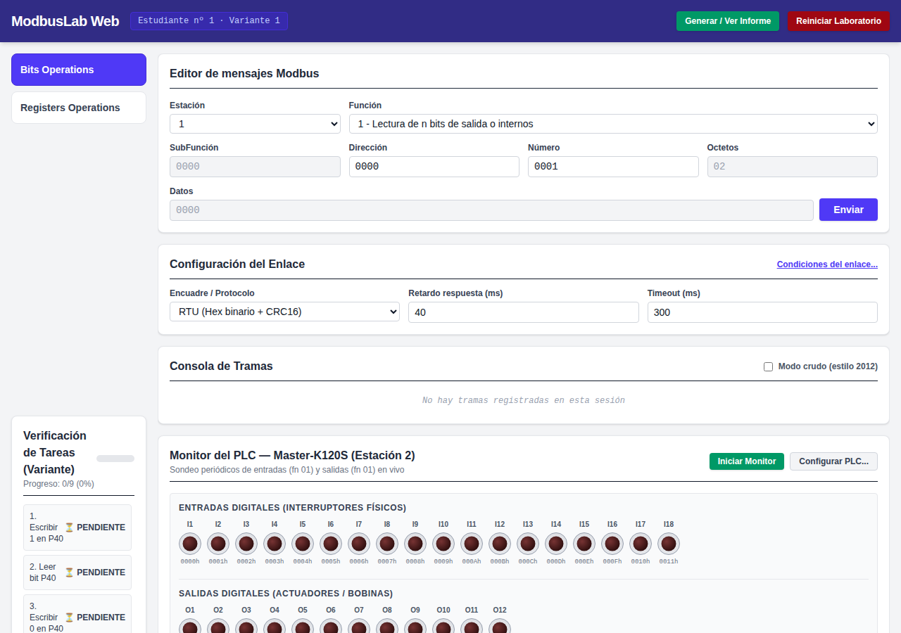
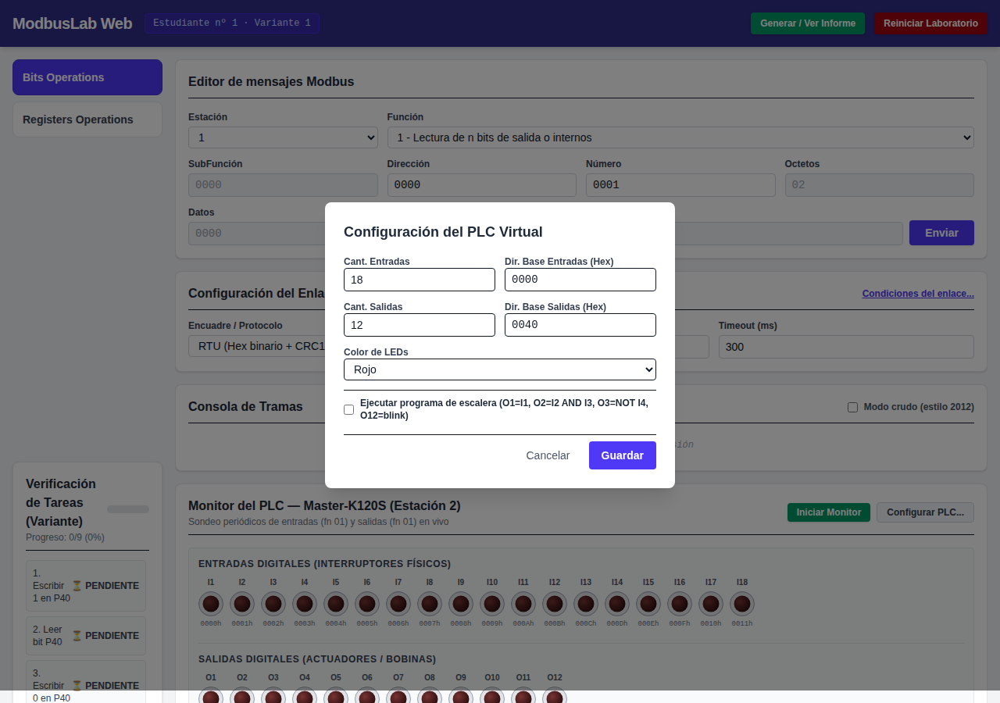
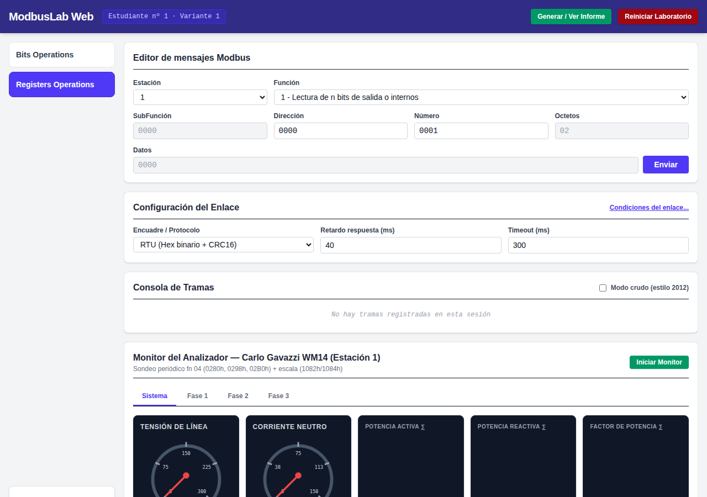
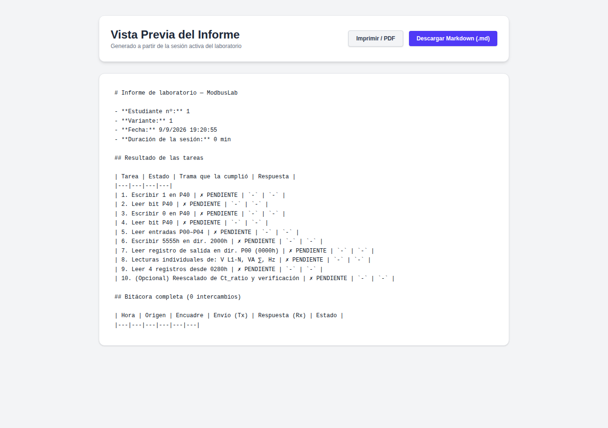

Manual del Usuario de ModbusLab Web
Este manual proporciona una explicación detallada e ilustrada con capturas de pantalla sobre cómo utilizar cada componente de la interfaz de ModbusLab Web.
🏠 1. Selección de variante e Ingreso al Laboratorio
Al acceder a la aplicación por primera vez, se presenta la pantalla de bienvenida donde el estudiante debe ingresar su Número de Lista (1 al 44) asignado por el profesor.

Pasos:
- Ingrese su número de lista en el campo Número de lista (1–44).
- Haga clic en el botón Ingresar al Laboratorio.
- El sistema cargará su variante e iniciará un sandbox aislado en su navegador.
⚡ 2. Panel de Operaciones con Bits (PLC Master-K120S)
En la pestaña Bits Operations, el estudiante interactúa con el PLC Virtual Master-K120S (Estación 2).

Secciones Principales:
- Barra Superior de Sesión:
- Muestra el número de estudiante y variante cargada.
- Botón Generar / Ver Informe para ver el avance y reporte final.
-
Botón Reiniciar Laboratorio para reiniciar el sandbox local.
-
Editor de Mensajes Modbus:
- Permite componer la PDU hexadecimal especificando Estación, Función, SubFunción, Dirección, Número, Octetos y Datos.
-
El botón Enviar transfiere la trama al bus virtual.
-
Configuración del Enlace:
- Selector de encuadre/protocolo: RTU (Hex binario + CRC16), ASCII o TCP (MBAP).
- Ajustes de Retardo de respuesta (ms) y Timeout (ms).
-
Enlace a Condiciones del enlace... para inyección opcional de fallos (pérdida de tramas o ruido en CRC).
-
Consola de Tramas:
- Registra de forma cronológica todas las tramas transmitidas ($\rightarrow$) y recibidas ($\leftarrow$).
-
Permite expandir cada fila para ver el desglose byte a byte o alternar al Modo crudo.
-
Monitor del PLC — Master-K120S (Estación 2):
- Entradas Digitales (I1–I18): Interruptores virtuales accionables con el ratón.
- Salidas Digitales (O1–O12): Actuadores gobernados por tramas Modbus o por el programa de escalera interno.
- Botón Iniciar Monitor: Inicia el sondeo periódico de entradas y salidas (tramas Fn 01).
-
Botón Configurar PLC...: Abre el diálogo de configuración de E/S.
-
Verificación de Tareas (Variante):
- Panel lateral que muestra en tiempo real el progreso de las 9 tareas obligatorias y su estado (PENDIENTE / CUMPLIDA).
⚙️ 3. Diálogo de Configuración del PLC
Al pulsar el botón Configurar PLC..., se despliega una ventana emergente para ajustar los parámetros de E/S del controlador:

Opciones Configurables:
- Cantidad de Entradas / Salidas: Número de puntos digitales activos en el monitor.
- Dirección Base de Entradas / Salidas: Offset hexadecimal de memoria para los grupos de E/S (p. ej.
0000hpara entradas,0040hpara salidas). - Color de LEDs: Selección visual para los indicadores (Verde o Rojo).
- Ejecutar Programa de Escalera: Interruptor para habilitar o pausar la lógica interna de control del PLC.
📊 4. Panel de Operaciones con Registros (Analizador WM14)
En la pestaña Registers Operations, el estudiante interactúa con el Analizador de Redes Carlo Gavazzi WM14 (Estación 1).

Elementos Destacados:
- Tabs de Fase:
- Pestañas para seleccionar la vista: Sistema (valores trifásicos promedios y neutro), Fase 1, Fase 2 y Fase 3.
- Instrumentos Analógicos de Aguja:
- Voltímetros y amperímetros con cuadrante de 270° que muestran la medición en tiempo real.
- Monitores Digitales LCD:
- Muestran lecturas numéricas de Potencia Activa ($\text{kW}$), Potencia Reactiva ($\text{kvar}$) y Factor de Potencia ($\text{pf}$).
- Banco de Cargas Trifásico (Inferior):
- Permite conectar/desconectar escalones de carga por fase para alterar la corriente y potencia medidas por el analizador.
📄 5. Generación y Previsualización del Informe Final
Al completar las tareas, al hacer clic en Generar / Ver Informe se abre la vista previa del reporte del laboratorio.

Características del Informe:
- Encabezado con datos del estudiante, variante, fecha y duración de la sesión.
- Tabla de Resultados de las Tareas con la trama exacta que cumplió cada requisito.
- Bitácora Completa de todas las tramas transmitidas y recibidas.
- Estado Final de Dispositivos (mapa de memoria del PLC y mediciones del analizador).
- Botones para Descargar en Markdown (
.md) o Imprimir / Guardar en PDF.